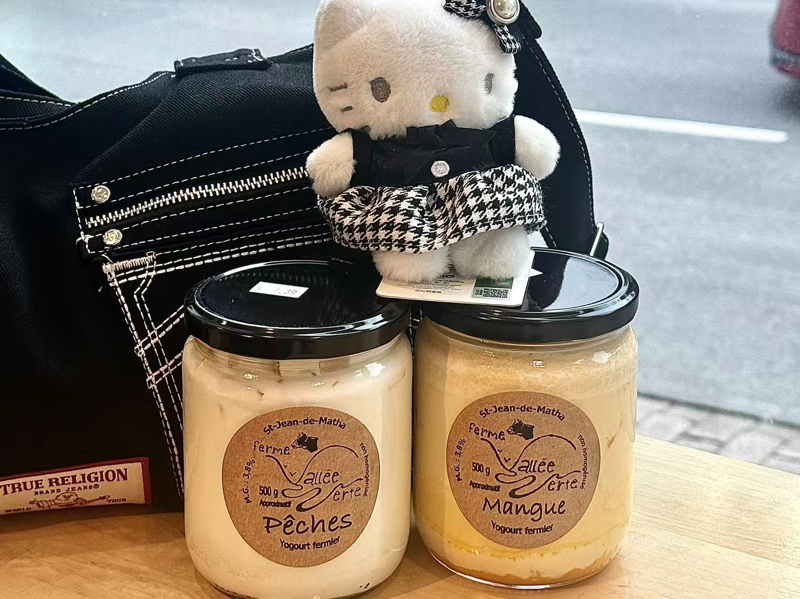

《The Lonely and Great God》Filming Locations
Exploring the filming locations and capturing my own memories of these places.
View PhotosExploring the filming locations and capturing my own memories of these places.
View Photos
Trying local specialties and recording the food experiences from my trip.
View PhotosPhotographing city scenes and viewing the beautiful sunset.
View Photos